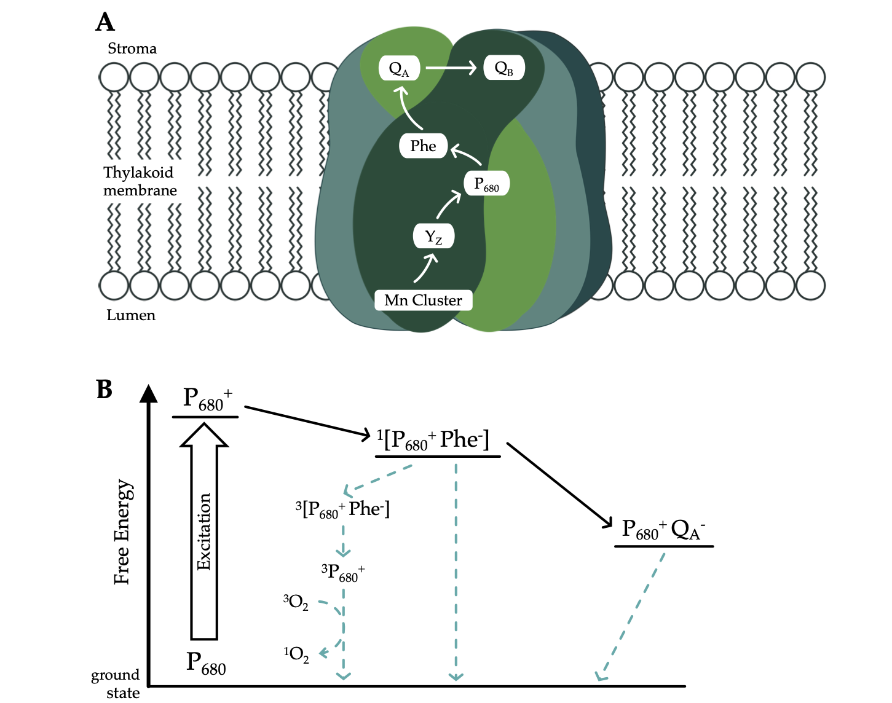
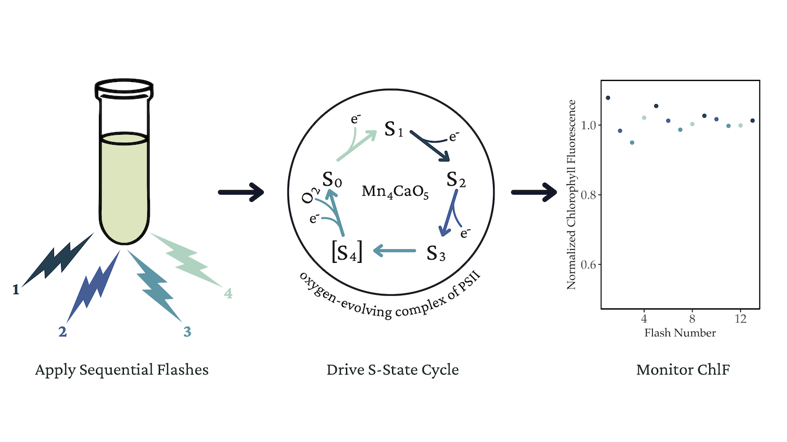
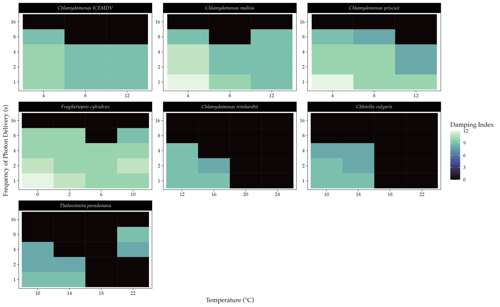

Latitude, Ice, & Light
Photosynthetic Adaptations of Polar Phytoplankton to Extreme Light Limitation
Natasha M. Ryan 1
nmryan@mta.ca
Arthur Plassart 2
Douglas A. Campbell 1
Department of Biology, Mount Allison University, 63B York St., Sackville NB, Canada, E4L 1G7
Takuvik International Research Laboratory, Université Laval (Canada) & CNRS (France), Departement de Biologie and Québec-Océan,Université Laval, Québec, QC, G1V 0A6, Canada
Introduction
Polar phytoplankton are vital to polar ecosystems [1]. As photolithotrophs, phytoplankton rely on photons for energy input, nominally restricting their growth to the photic zone, defined as the region where sufficient light for photosynthesis penetrates, traditionally extending down to 1% of surface irradiance [2,3]
Despite severe light constraints, certain polar phytoplankton exhibit slow but significant productivity under the ice during winter, suggesting adaptations to maintain photosynthesis under light limitation [4,5].
During photosynthesis, a complete water oxidation cycle requires the absorption of four photons. When photon arrivals are widely spaced, as occurs in low light, photosynthetic efficiency may decline due to futile charge recombinations[6]. We hypothesized that maintaining photosynthesis under extremely low light and low temperatures involves suppressing energetically wasteful charge recombinations in Photosystem II (PSII).

Figure 1: Energetic Pathways of PSII; A) Electron flow through the photosystem II protein complex within the thylakoid membrane B) Principal charge recombination pathways of photosystem II
Methods
Recombination causes an individual PSII to slip in its four-step cycle of oxygen evolution, causing desynchronization across the population of PSIIs [7]. As the energy partitioned to fluorescence varies across the four steps, a population of synchronized PSIIs will exhibit a four-step cycling pattern of chlorophyll fluorescence.
Therefore, variable chlorophyll fluorescence can be used to evaluate the synchronization of the PSII. By inference, prolonged synchronization implies low recombination and vice-versa [8,9].

Figure 2: Repeated single-turnover excitation of maximum variable chlorophyll fluorescence (Fm) for monitoring the four-step cycle of oxygen evolution in PSII during photosynthesis
We used Wavelet Transforms to analyze the persistence of PSII chlorophyll fluorescence cycling across polar and temperate taxa of diatoms and green algae under a range of light and temperatures[10]. This analysis helped determine whether polar taxa have evolved to increase photosynthetic energy conversion efficiency by minimizing inefficient recombination reactions.
Results
We observe 2 key patterns within and between taxa:
Within taxa, shorter spacing of photon delivery, and colder temperatures, results in stronger four-step cycling of PSII maximum chlorophyll fluorescence, and by inference, less wasteful recombination.
Polar taxa maintain significant four-step PSII cycling across a broader range of conditions, at wider spacings of photons, equivalent to lower ambient light, than do their temperate counterparts.

Figure 3: Duration of significant four-step cycling of PSII chlorophyll fluorescence in polar (left) and temperate (right) taxa of diatoms and green algae under a range of low light and temperature conditions. Wider spacing of photon delivery (y axis) is analagous to lower ambient light.
Conclusions
Our findings indicate that diverse polar phytoplankton have capacity to suppress wasteful recombinations at PSII, to sustain efficient photosynthesis under extreme low light and low temperatures.
This research challenges the conventional understanding of the limits on photosynthesis under light limitation, helping unravel polar ecosystem dynamics and predict ecosystem responses to climate change
References
1.
Ardyna M, Arrigo KR. Phytoplankton dynamics in a changing Arctic Ocean. Nature Climate Change. 2020;10: 892–903. doi:10.1038/s41558-020-0905-y
2.
Raven JA, Kübler JE, Beardall J. Put out the light, and then put out the light. Journal of the Marine Biological Association of the United Kingdom. 2000;80: 1–25. doi:10.1017/S0025315499001526
3.
Kirk JTO. Light and Photosynthesis in Aquatic Ecosystems. 3rd ed. Cambridge, UK ; Cambridge University Press; 2011.
4.
Randelhoff A, Lacour L, Marec C, Leymarie E, Lagunas J, Xing X, et al. Arctic mid-winter phytoplankton growth revealed by autonomous profilers. Science Advances. 2020;6: eabc2678. doi:10.1126/sciadv.abc2678
5.
Hancke K, Lund-Hansen LC, Lamare ML, Højlund Pedersen S, King MD, Andersen P, et al. Extreme Low Light Requirement for Algae Growth Underneath Sea Ice: A Case Study From Station Nord, NE Greenland. Journal of Geophysical Research: Oceans. 2018;123: 985–1000. doi:10.1002/2017JC013263
6.
Keren N, Berg A, van Kan PJM, Levanon H, Ohad I. Mechanism of photosystem II photoinactivation and D1 protein degradation at low light: The role of back electron flow. Proceedings of the National Academy of Sciences. 1997;94: 1579–1584. doi:10.1073/pnas.94.4.1579
7.
Gates C, Ananyev G, Dismukes GC. Realtime kinetics of the light driven steps of photosynthetic water oxidation in living organisms by “stroboscopic” fluorometry. Biochimica et Biophysica Acta (BBA) - Bioenergetics. 2020;1861: 148212. doi:10.1016/j.bbabio.2020.148212
8.
Schuback N, Tortell PD, Berman-Frank I, Campbell DA, Ciotti A, Courtecuisse E, et al. Single-Turnover Variable Chlorophyll Fluorescence as a Tool for Assessing Phytoplankton Photosynthesis and Primary Productivity: Opportunities, Caveats and Recommendations. Frontiers in Marine Science. 2021;8.
9.
Zaharieva I, Dau H. Energetics and Kinetics of S-State Transitions Monitored by Delayed Chlorophyll Fluorescence. Frontiers in Plant Science. 2019;10.
10.
Theis FJ, Meyer-Bäse A. Spectral Transformations. 1st ed. Biomedical Signal Analysis : Contemporary Methods and Applications. 1st ed. MIT Press; 2010. p. 42.